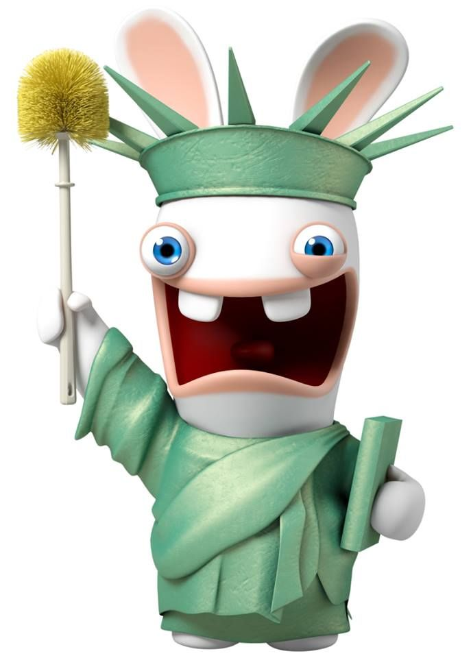
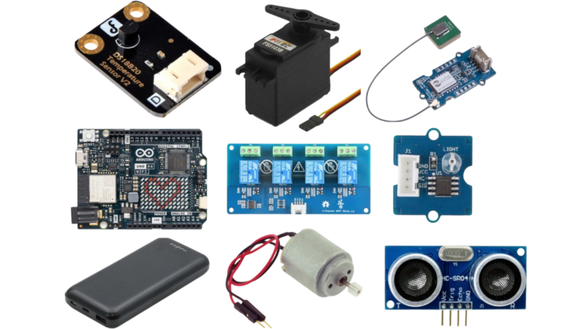
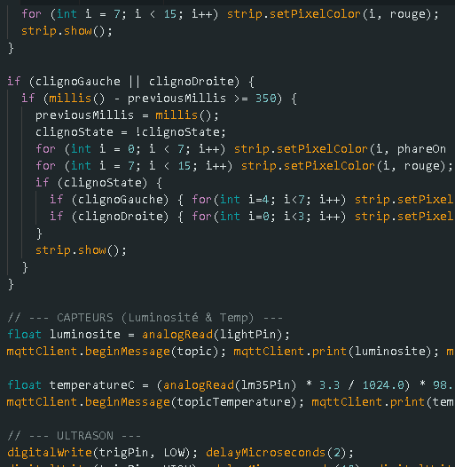
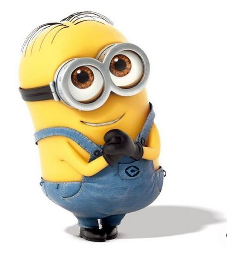
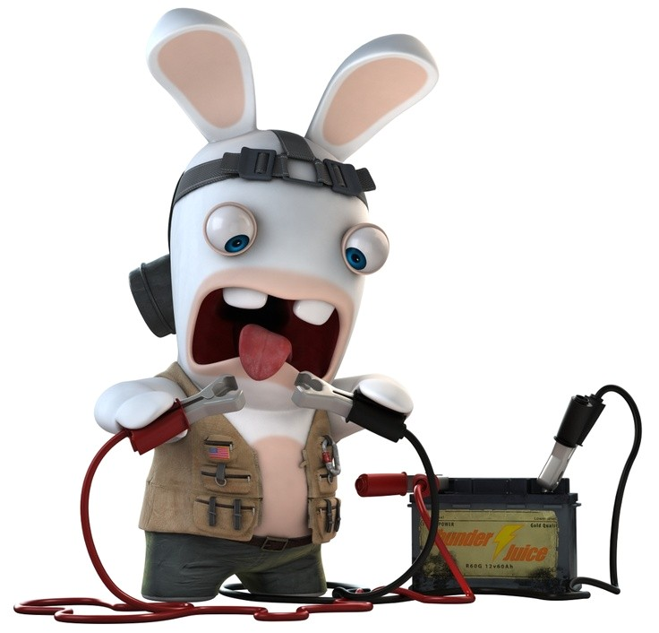
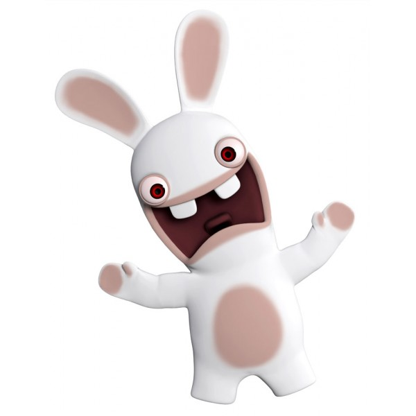

Conception et documentation technique d'une solution robotisée d'exploration à distance, conçue pour reconnecter les personnes à mobilité réduite avec les environnements naturels hostiles.
Lire le rapport techniquePourquoi avons-nous développé cette solution et quel problème visons-nous à résoudre ?
L'isolement et la sédentarité touchent de nombreuses personnes âgées, qui ne peuvent plus se déplacer facilement dans des environnements naturels tels que les forêts, les sentiers de randonnée ou les zones escarpées. Pourtant, garder un lien avec la nature est super important pour le moral et le bien-être.
L'objectif absolu de notre prototype est d'offrir une solution de téléprésence immersive. Concrètement, le robot Terra-Explorer devient « les jambes et les yeux » de l'utilisateur final. Propulsé par un système robuste à chenilles, il est conçu pour franchir des obstacles d'arrière-pays (cailloux, racines) là où des roues standards échoueraient. La captation vidéo en direct est ensuite transmise en temps réel à l'utilisateur resté chez lui.

Ce dont nous avons eu besoin pour construire notre robot et les critères de sélection.
Nous avons dû tout d’abord choisir le matériel dont nous allions avoir besoin. Les critères les plus importants pour choisir ce matériel sont qu’ils soient compatibles avec la carte Arduino UNO R4 wifi.
Le premier élément qui est le plus important est la carte Arduino UNO R4 wifi qui va nous permettre de mettre le programme dedans pour qu’il soit exécuté, et le wifi dont la carte est équipée nous permettra de lui donner des ordres à distance.
Nous avons aussi besoin d’une batterie qui sert à faire fonctionner tous les autres composants, ainsi que de bases qui vont nous servir de multiprise pour alimenter les composants.
Puis il a fallu choisir 2 moteurs qui sont assez puissants pour faire avancer le robot, mais qui ne consomment pas trop de courant pour ne pas vider la batterie trop vite, et pour pouvoir rajouter d’autres composants.
Après, il a fallu trouver une carte 4 relais pour pouvoir brancher les moteurs en pont en H, ce qui nous permettra par la suite de faire tourner nos moteurs dans un sens ou dans l’autre sens.
Il nous faut aussi 2 servomoteurs pour pouvoir contrôler l’inclinaison et la rotation du support à téléphone, pour eux il faut les choisir en fonction de la puissance qu’on a besoin pour faire bouger le support à téléphone et de l’angle sur lequel on veut qu’il puisse se déplacer.
Nous allons aussi nous servir de bandes LED qui vont nous servir de phare ainsi que de clignotant pour notre robot, pour cela il va falloir choisir le nombre de LED qu’on veut sur notre bande ainsi que la longueur qu’on veut.
Il nous faut aussi plusieurs capteurs qu’on choisit en fonction des informations que nous voulons recevoir :
• Nous avons choisi de pouvoir voir la température qu’il fait où notre robot est présent, donc on a choisi un capteur de température.
• Puis on voulait pouvoir situer notre robot dans l’espace donc nous l’avons équipé d’un GPS.
• Nous l’avons aussi équipé d’un capteur de luminosité qui nous permet d’actionner automatiquement les phares quand il fait trop sombre.
• Puis nous l’avons équipé d’un capteur ultrasons pour qu’on puisse savoir à quelle distance l’obstacle se situe et qu’on puisse arrêter les moteurs avant la collision.

L'approche appliquée pour notre code s'inspire du développement logiciel classique : programmation des différents capteurs et actionneurs un par un, avant de tout réunir pour assembler le programme complet de la carte Arduino. Des tests physiques nous ont permis de trouver et régler les bugs.
Pour faciliter le contrôle du robot, nous avons conçu un Site Web (Interface Utilisateur). Il utilise du HTML pour la structure, du CSS pour donner un joli design, et du JavaScript pour envoyer directement les commandes aux moteurs (comme avancer ou reculer) avec un simple clic. Ce système permet à n'importe qui d'utiliser le robot facilement, sans connaissances techniques.

Ce que nous avons observé lors de nos tests en conditions réelles.
Mobilité & Vidéo
Température
Acquisition GPS
Nous avons découvert plusieurs instabilités. Les moteurs consomment beaucoup de courant, ce qui crée des baisses de tension sur la carte mère. À cause de cela, les lectures du capteur de température sont complètement faussées. Le GPS, de son côté, met beaucoup de temps à s'allumer s'il est resté éteint longtemps, et il ne fonctionne pas à travers les bâtiments ou les toits.
Pour l'améliorer, il faudrait séparer l'alimentation des capteurs de celle des moteurs pour éviter les chutes de tension. Pour le protéger, il faudrait une coque étanche contre la terre et l'eau (norme IP67). Enfin, il serait beaucoup plus pratique que le robot se connecte tout seul en wifi dès qu'on le lance, plutôt que de tout paramétrer à la main à chaque fois.
La réalisation du projet valide notre idée de départ. Le robot parvient à se déplacer, à filmer et à nous envoyer les données à distance. Le concept de "téléprésence" fonctionne et est tout à fait réalisable à l'échelle d'un prototype.
Cependant, la technique nous a appris qu'assembler des pièces et du code ne suffit pas toujours : il faut que l'ensemble soit stable. Notre problème de capteur de température déréglé par les moteurs le prouve. Mais c'est justement ce travail de recherche et de résolution de problèmes qui rend ce projet de terminale STI2D très instructif et passionnant.


